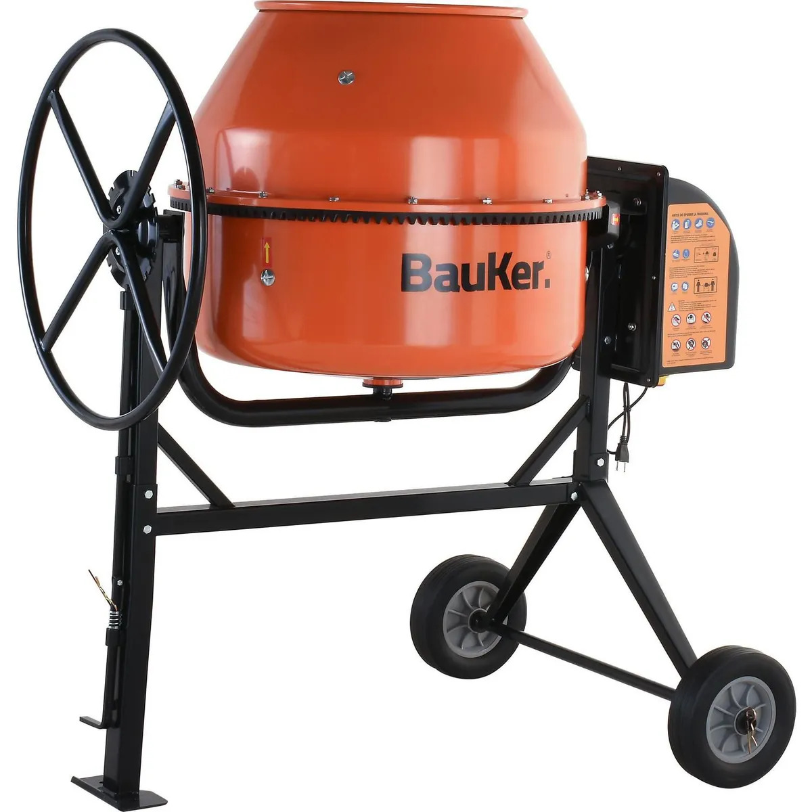

Mezcladora de concreto

Equipo con tambor giratorio que ayuda a obtener mezclas homogéneas para trabajos de construcción. Reduce el esfuerzo manual y facilita preparar concreto o mortero según las proporciones necesarias.